Layar baru untuk tim finance meninjau tanda selisih pencairan gaji dan menutupnya berdua: satu orang mengusulkan, orang lain menyetujui dengan kata sandi. Ada enam keadaan; cukup lihat gambarnya, lalu jawab setuju atau minta diubah.
Daftar tanda selisih ada di kiri, panel pemeriksaan di kanan. Orang yang mengusulkan wajib menulis alasan dan mengisi kata sandi.
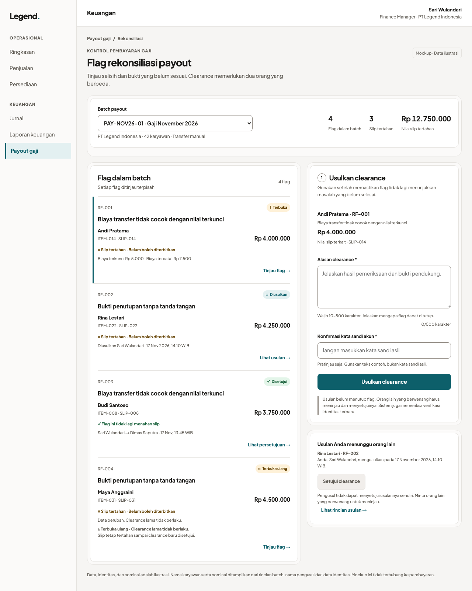
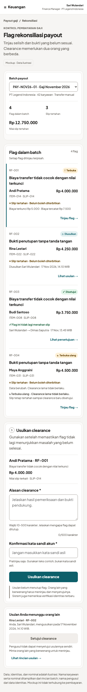
Panel menampilkan siapa yang mengusulkan, kapan, dan alasannya. Orang kedua menyetujui dengan kata sandi sendiri.
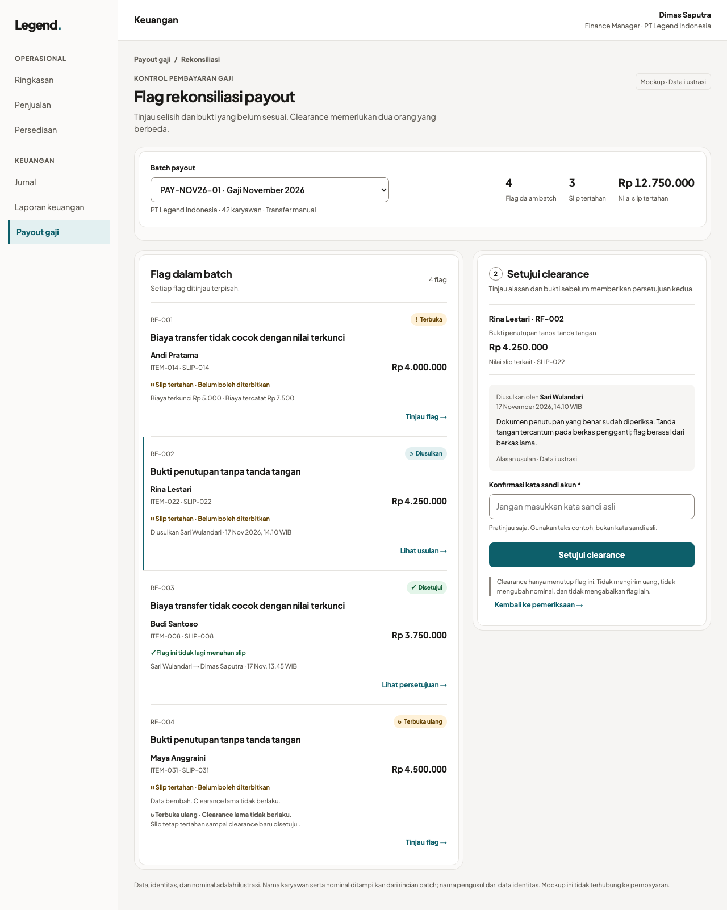
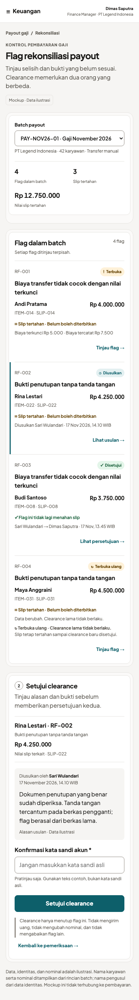
Bila yang membuka panel adalah orang yang mengusulkan, tombol setujui nonaktif dan diberi penjelasan singkat.
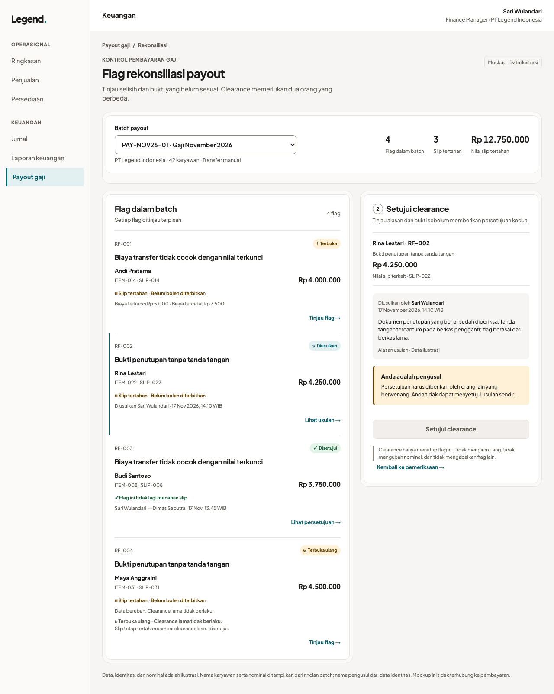
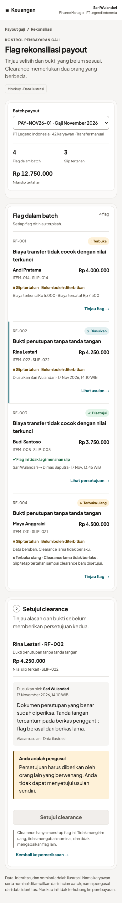
Bila data selisih berubah setelah usulan dibuat, usulan lama tidak bisa disetujui. Tim harus memeriksa data terbaru lalu membuat usulan baru.
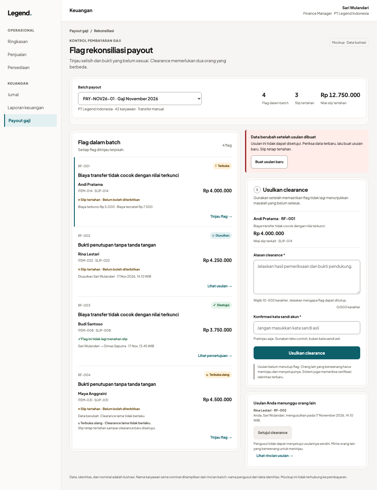
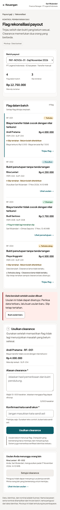
Clearance yang sudah disetujui bisa kembali ditahan bila datanya berubah. Tanda Clearance lama tidak berlaku muncul supaya finance memeriksa ulang.
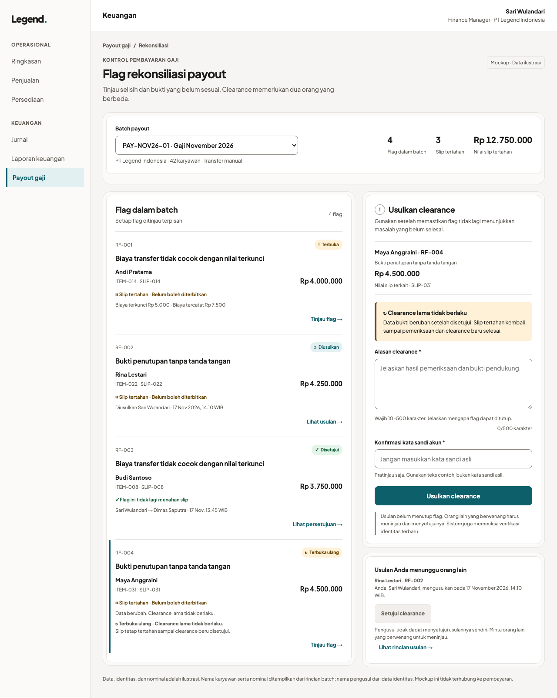
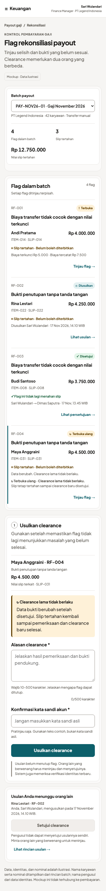
Setelah disetujui, layar menunjukkan siapa dan kapan dua orang itu bertindak. Ini hanya menutup satu tanda; tidak berarti gaji langsung dibayar.
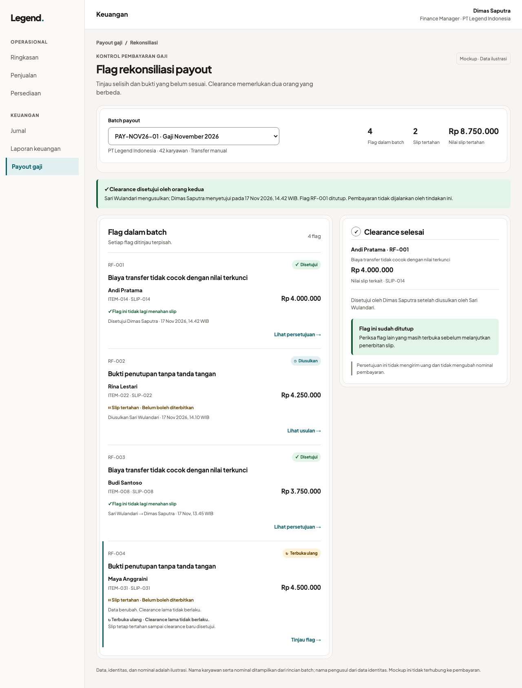
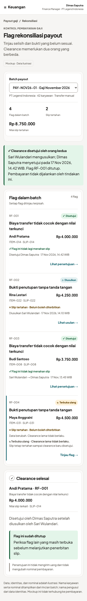
Enam keadaan di atas: normal, persetujuan orang kedua, pengusul sendiri, data berubah, terbuka ulang, dan sukses. Bila memilih Ubah dulu, tulis keadaan mana dan maunya bagaimana di kotak catatan.